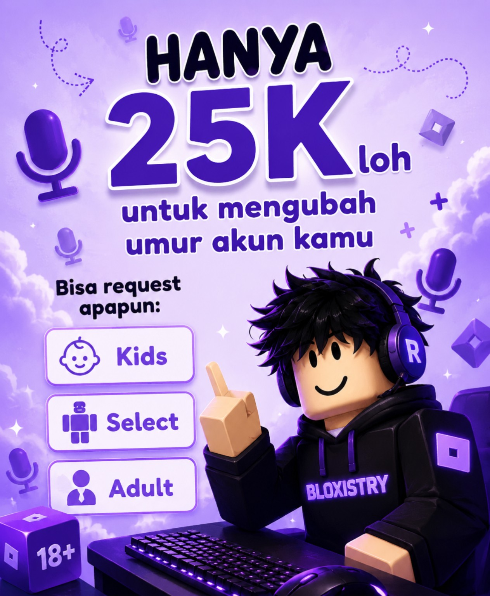

VOICE CHAT
Jasa Aktifkan On Mic Roblox
Membantu proses pengaktifan fitur Voice Chat / On Mic Roblox pada akun yang memenuhi persyaratan. Hubungi admin untuk pengecekan dan arahan proses.
Order On Mic →Memuat TamaBlox...
Aktifkan fitur Voice Chat Roblox dengan layanan TamaBlox. Pilih layanan di bawah, baca keterangannya, lalu langsung hubungi admin melalui WhatsApp.
Hanya gambar yang menjadi bagian dari layanan ditampilkan di sini. Dua layanan dibuat besar dan berjejer agar mudah dilihat.
Membantu proses pengaktifan fitur Voice Chat / On Mic Roblox pada akun yang memenuhi persyaratan. Hubungi admin untuk pengecekan dan arahan proses.
Order On Mic →
Jasa setting umur roblox bisa ubah umur roblox sesuai pilihan dan ketentuan yang kamu mau.
Tanya Age Settings →Pilih On Mic atau Age Settings dari dua layanan di atas.
Klik tombol layanan untuk langsung membuka WhatsApp TamaBlox.
Berikan informasi yang diperlukan dan ikuti proses dari admin.
Langsung hubungi admin TamaBlox untuk mulai.
Hubungi WhatsApp →